Automation Direct HMIs are programmed using only one application program. This tutorial steps you through the use of C-More Micro HMI programming software as though you were using it for the very first time.
When you start up the C-More Micro HMI panel programming software application, you will immediately see a window offering your three choices -- make a new project, read from disk (open an existing project saved on the PC's hard drive), or read from panel (open a running project on the HMI panel):
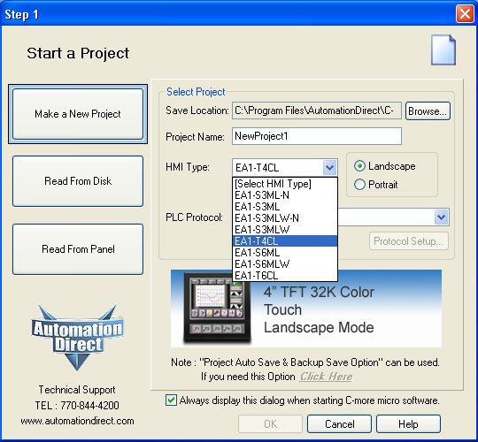
The first two choices begin by opening a file on your PC's hard drive, where you may create or edit an HMI project in ``offline'' mode (i.e. while not communicating with the HMI panel). The last choice connects you to the HMI panel so that you begin with whatever project currently existing in the panel's memory.
In this tutorial, we will begin with the first option: creating a brand-new project. The next few steps you take are absolutely crucial to making your HMI project work properly. You must choose the specific model of panel it will run on, and then you must choose the specific model of PLC the panel will communicate with. Here, I have chosen a model EA1-T4CL C-More Micro HMI panel, and am in the process of choosing "Allen-Bradley DF1 Full Duplex (MicroLogix) so that my panel will be able to communication with my Allen-Bradley MicroLogix 1100 PLC:
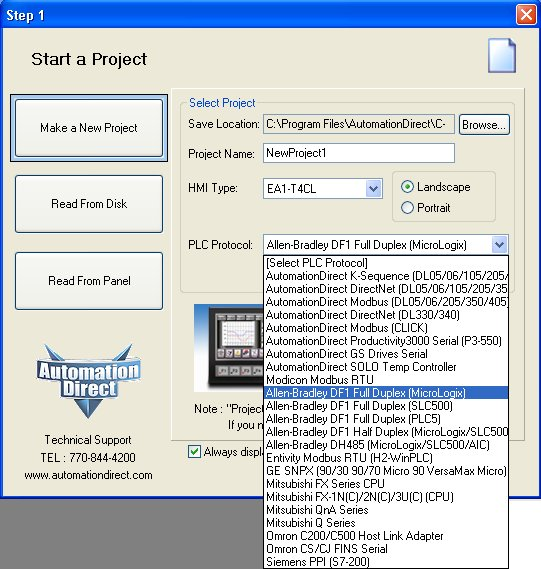
Equally important to the successful operation of your project is to properly configure the serial data communication parameters for the type of PLC you have chosen. This setup screen is accessed by clicking on the "Protocol Setup" button just below the "PLC Protocol" pull-down menu. All serial data communication parameters entered here must match the parameters set in your PLC, so that your HMI panel will communicate properly with your PLC:
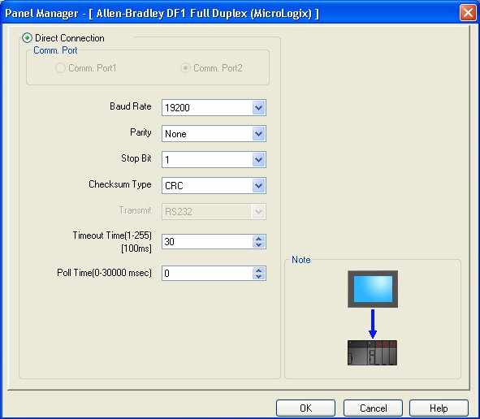
After configuring the protocol parameters, click on the "OK" button on this setup screen, as well as the "OK" button on the parent screen, to progress to the next step.
Next, you will find yourself looking at a "blank screen" representing the screen of your HMI panel display. Upon this screen you will place graphical objects linked to memory locations in your PLC. An "Object List" pallette on the right-hand side lists the various objects you may pick from to build your HMI project. A "Navigation" pane on the left-hand side shows where you may configure multiple screens (pages) on your HMI panel, among other things:
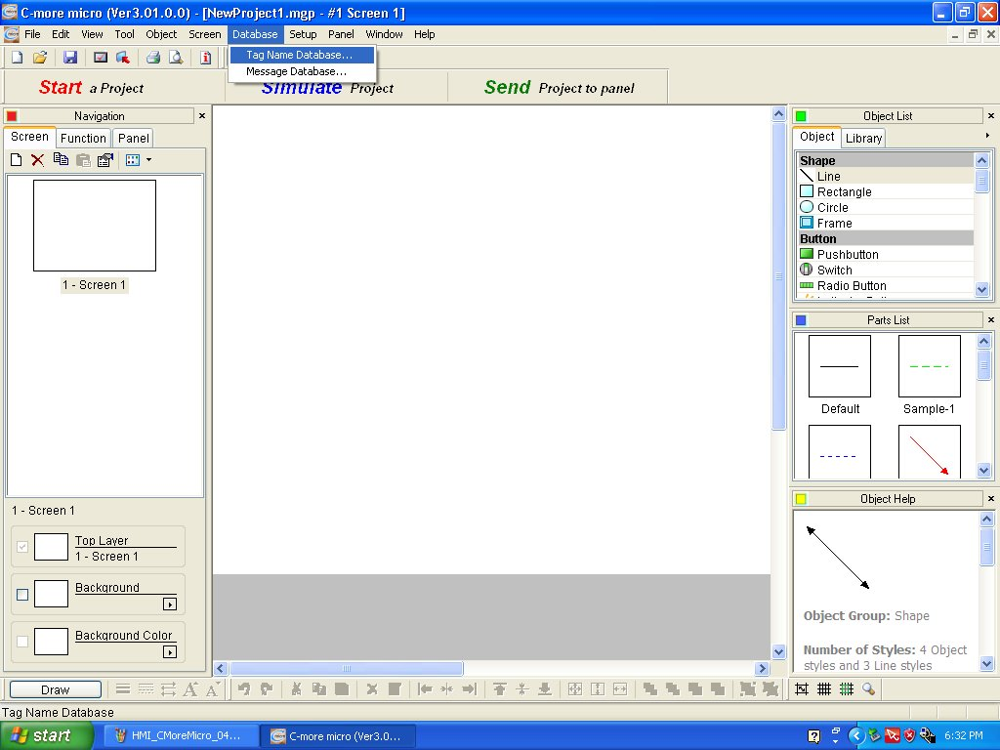
From the "Database" pull-down menu, choose "Tag Name Database" to open up a new screen where you may begin to specify all the variables ("tags") used in your HMI project.
Here we see a nearly empty tag name database, ready to begin entering new tags. It is best to configure this database before beginning to place graphical objects on the screen. Here is where we name those tags, specify what data type each one is, and where in the PLC's memory it will be associated.
Clicking on the "Add" button brings up a smaller window, where we may configure our first tag. This particular tag will read input bit
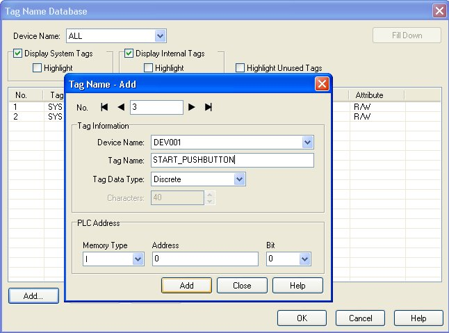
The tag name I give to this tag is completely arbitrary, although no spaces are allowed in the name. This is why an underscore character is used to separate the words "START" and "PUSHBUTTON". Note also the Device this tag is associated with: I have the option of referencing tags to certain internal bits within the HMI panel in addition to bits in the PLC (called "DEV001" by default). If the HMI panel is configured to communicate with multiple PLCs, there will be more than one "DEV" to choose from in this drop-down menu.
The next tag I add to the database is one for the motor's status, pulled directly from PLC output bit
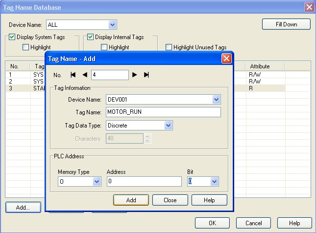
Next, I added a tag to read the accumulator of timer
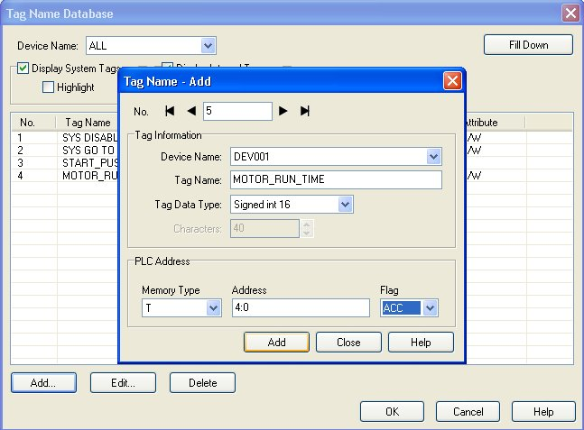
Since all timer and counter accumulators are 16 bits (signed) in size for the Allen-Bradley MicroLogix family of PLCs, this is the data type chosen for the MOTOR_RUN_TIME tag.
In addition to being able to read the statuses of I/O bits in the MicroLogix PLC, I want my HMI to be able to write bit statuses to the PLC as well. In particular, I want the HMI screen to have its own "Start" pushbutton so the motor may be started from the HMI (without having to press the actual pushbutton switch wired to the PLC). To do this, I will configure a tag associated with a bit memory location inside the MicroLogix PLC, in this case bit
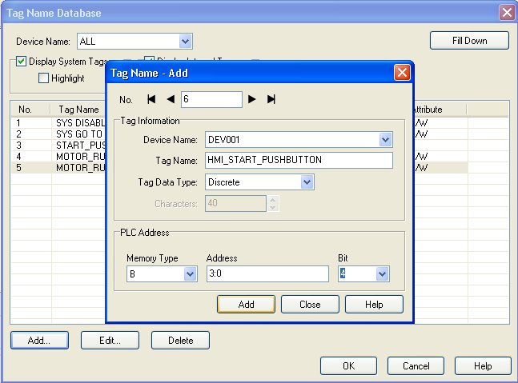
After adding that last tag, we may survey our tag name database. This is a good opportunity to survey the database listing to see if all tags make sense. Do they have the right read/write permissions? Do the PLC memory addresses match our PLC's programming? Are the tag names themselves logical and easy to understand the purpose of?
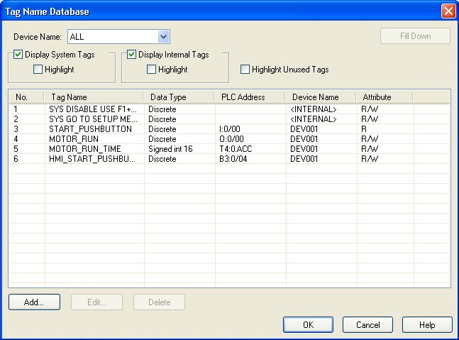
Note how the START_PUSHBUTTON tag is read-only. This means it is able to read from the PLC what that input bit status is, but the HMI panel cannot write (send) data to that location in PLC memory. This makes perfect sense: we do not want the HMI panel to cause a memory conflict inside the PLC, by writing data to a bit that's already being written to as the PLC scans its hard-wired inputs.
After closing the tag name database window, we return to the screen showing the HMI's graphic display. Here we may paste our first graphical object to the viewing area, in this case a pushbutton:
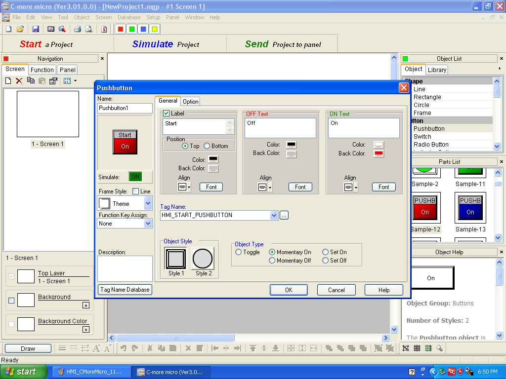
Note the various parameters associated with this object. First and foremost, the pushbutton object must be associated with an existing tag, chosen from a pull-down menu. The software only shows you compatible tags (based on data type) from this menu. You cannot, for example, choose an integer tag to be associated with a pushbutton which is by its very nature a discrete (on/off) device! One of the very important parameters seen on this screen is the button's "Object Type," chosen in this case to be a momentary on switch. This is important, as the default Type ("Toggle") would turn on when pushed once and then turn off when pushed again. While this may be useful in some applications, here I want a momentary pushbutton action so that the PLC will do the latching of the bit to keep the motor running.
Next, I place a numerical indicator object on the display, by dragging and dropping it from the pallette just like I did the pushbutton object:
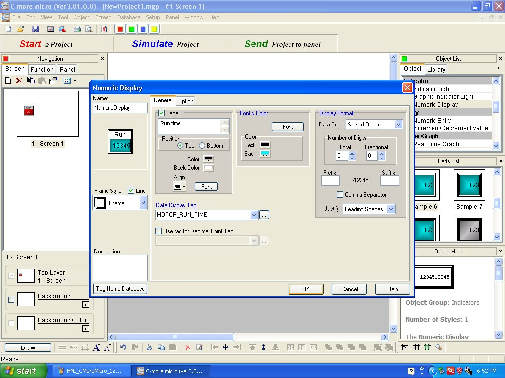
For this indicator, I chose a ``Signed Decimal" data type to match the signed 16-bit type of the MOTOR_RUN_TIME tag. Other options are available including BCD and floating-point, but of course the tag must be configured accordingly in the tag name editor. The "Number of Digits" option allows me to express the integer value as a fixed-point display. For example, if the
After closing the object's configuration window, you may adjust the placement and size of each object. This is done by "grabbing" a corner or side of the object with your mouse pointer and dragging it until the object looks the way you want it to:

When all adjustments have been made to the appearance and settings of the graphical screen, you may transfer the project to the HMI panel by clicking on the "SEND Project to Panel" button just above the viewing area. This opens up another window where you may choose the proper serial port and commit to transferring the project. If you are using a USB-to-serial adapter on your PC to connect to the HMI panel, you may map the USB adapter as a standard COM port by going to your computer's "Device Manager" window (click on the "Device Manager" button to conveniently go there).
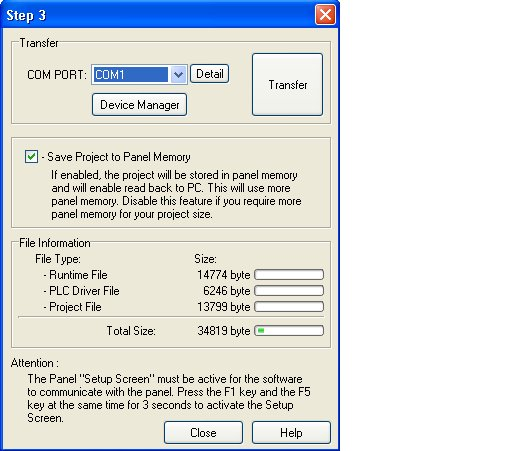
A very easy step to overlook before transferring is the need to press both F1 and F5 buttons on your HMI panel simultaneously before making the transfer. The window even contains a note reminding you to do this ("Attention . . ."), but this step is easily forgotten. If you fail to do this, the program will simply abort the transfer and remind you to push the HMI buttons like you should have the first time.
Students find the AutomationDirect C-More Micro panels very easy to work with, and the software quite easy to learn. This tutorial merely scratches the surface of the panel's capabilities, giving you enough information to get started on your own. Have fun!